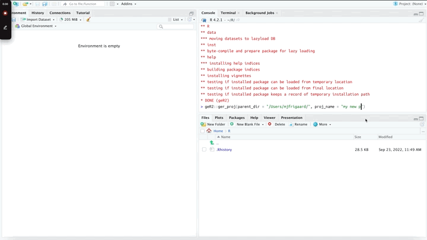
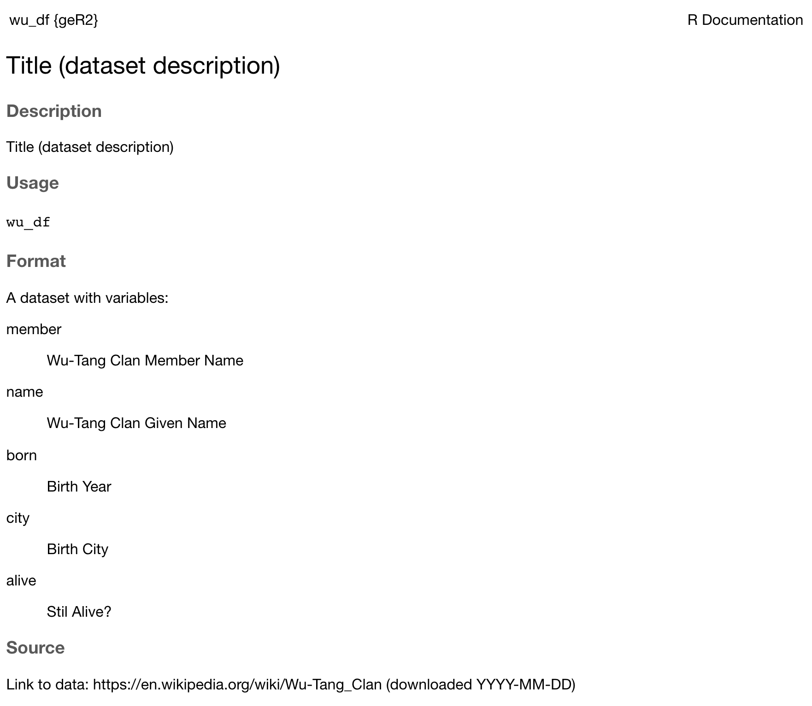

getting-started
getting-started.RmdInstall package
install.packages("remotes")
remotes::install_github("mjfrigaard/gerp")Create project
Create a new gerp project:

ger_code()
The ger_code() creates the following files:
code
├── data.R
├── import.R
├── model.R
├── tidy.R
├── visualize.R
└── wrangle.RYou can choose to have regular R script headers or
roxygen2 headers:
code/data.R
The code/data.R file should be used for documenting
datasets in your project. See example below:
#' Title (dataset description)
#'
#' @format A dataset with variables:
#' \describe{
#' \item{member}{Wu-Tang Clan Member Name}
#' \item{name}{Wu-Tang Clan Given Name}
#' \item{born}{Birth Year}
#' \item{city}{Birth City}
#' \item{alive}{Stil Alive?}
#' }
#' @source Link to data: https://en.wikipedia.org/wiki/Wu-Tang_Clan
#' (downloaded YYYY-MM-DD)
'wu_df'This will create the .Rd document so your dataset is accessible in the Help pane.

ger_data()
The ger_data() creates three folders and a
data.md file.
├── data.md
├── data
├── data-raw
└── inst
└── extdatadata-raw/: should contain any code used to import, download and include data in your projectdata/: should contain processed, intermediate, or otherwise altered data in your projectinst/exdata/: should have any external data used for examples or testingdata.md: Document your data here and incode/data.R
For example, I have stored the wu_data.csv data stored
in inst/exdata/:
inst/extdata/
└── wu_data.csvThe code to download wu_data.csv from Github in
data-raw/wu_df.R (see below)
## code to prepare `wu_df` dataset goes here
wu_df <- utils::read.csv(
"https://raw.githubusercontent.com/mjfrigaard/gerp/main/inst/extdata/wu_data.csv")
usethis::use_data(wu_df, overwrite = TRUE)The usethis::use_data(wu_df, overwrite = TRUE) command
will automatically save this to the data/ folder.
data
└── wu_df.rdaIt’s documented in the code/data.R example, and I can
add more details in data.md.
ger_ref()
The ger_ref() function creates three files for
documentation: ref/notebook.Rmd,
ref/manuscript.Rmd, and changelog.md.
├── changelog.md
ref/
├── manuscript.Rmd
└── notebook.Rmdref/notebook.Rmd: An R Markdown notebook (i.e., lab notebook).ref/manuscript.Rmd: A more polished R Markdown file for reports or manuscripts.changelog.md: Manually document changes to the files or folders in your project.
Wrapper (ger_setup())
For quick setup, run the ger_setup() function to create
code/, data/, and ref/
folders.

This also creates a CITATION file:
Make the project citable (3e) by including a CITATION file in the project's home
directory that describes how to cite this project as a whole, and where to find
(and how to cite) any data sets, code, figures, and other artifacts that have
their own DOIs.
Please cite this work as:
Morris, B.D. and E.P. White. 2013. 'The EcoData Retriever:
improving access to existing ecological data.'PLOS ONE 8:e65848.
http://doi.org/doi:10.1371/journal.pone.0065848A requirements.md file
# Requirements
==============
Make dependencies and requirements explicit. This is usually done on a
per-project rather than per-program basis, i.e., by adding a file called
something like requirements.txt to the root directory of the project
source: https://swcarpentry.github.io/good-enough-practices-in-scientific-computing/And a LICENSE file (from CC0 1.0
Universal)